La flotte sans fenêtres de la S.A.R.L. Napoléon d'Artagnan qui presse la limonade de la Galaxie.
Firmware génératif pour M-VAVE FM-1 pour Flash Dog Duke Silver (fork de Mutable Dreams). Six pistes jouent chacune selon leur propre logique (rythme euclidien, probabilités, variations), mais partagent une même gamme et un même temps.
Monades part de Mutable Dreams 1.1 de Kid Bunka, qui fait déjà tourner sur le FM-1 des algorithmes de Plaits, Rings et Elements de Mutable Instruments. Le but : un génératif plus profond, des gammes du monde entier, une vraie sortie MIDI et un écran qui montre ce qu'on règle.
Le code compile sur Mac et passe les tests de Mutable Dreams et ceux de Monades. Aucune version de Monades n'a encore été testée sur un FM-1. Pour jouer dès aujourd'hui, installez Mutable Dreams : Monades en reprendra les Biomes et les sauvegardes.
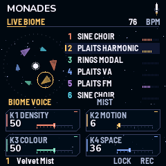
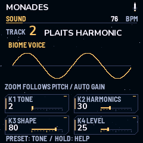
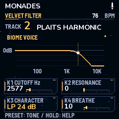
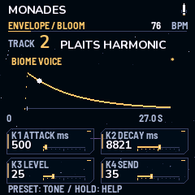
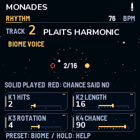
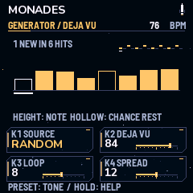
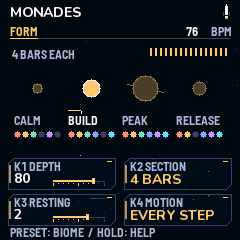
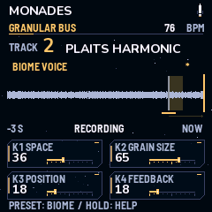
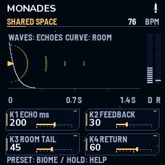
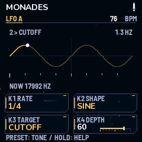
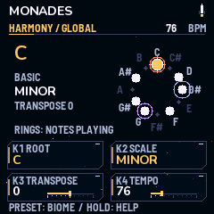
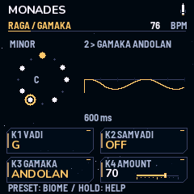
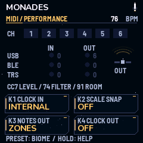
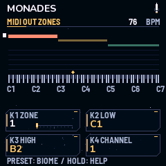
Cinq boutons ouvrent les pages. Appuyer plusieurs fois sur le même bouton fait défiler ses pages. Sur chaque page, les potards K1 à K4 règlent les quatre cadres du bas de l'écran.
| Bouton | Pages, dans l'ordre |
|---|---|
| HOME | LIVE BIOME |
| EDIT | SOUND → VELVET FILTER → ENVELOPE → MIX → GLOBAL MIXER |
| SEQ | RHYTHM → GROOVE → BASS / MOTIFS → PHRASE → GENERATOR → FORM |
| FX | GRANULAR BUS → TAPE → SHARED SPACE → SPACE TONE → ECHO SYNC / CHORUS → MARBLES / TIDES / WARPS → LFO A → LFO B |
| GLO | HARMONY → RAGA / GAMAKA → SYSTEM → LOOK → MIDI → MIDI OUT ZONES → USER BANKS |
| Commande | Effet |
|---|---|
| SELECT | Choisit la piste 1 à 6. |
| SEL | Coupe ou rétablit la piste choisie. |
| ALGO | Change le moteur sonore de la piste (12 moteurs). |
| PRESET | Sur les pages d'une piste : un des 224 sons. Ailleurs : un des 76 Biomes, ou le Blank. |
| PLAY | Lance ou arrête la séquence. |
| REC | Nouvelle variation. Sur SYSTEM et MIDI : panique. Sur GENERATOR : efface le motif. |
| ENV | Revient à la variation précédente. |
| ARP | Verrouille la graine : la même variation se répète. |
| LFO | Fige la bande granulaire (Freeze). |
| OCT− / OCT+ | Octave du clavier. |
| SAVE | Sauve le Biome et les préférences, à l'arrêt et sur horloge interne. Sur USER BANKS : sauve dans le slot choisi. |
| Clavier | Joue la piste choisie. Sur HARMONY avec la gamme CUSTOM : ajoute ou retire des notes. Sur GENERATOR : écrit le motif. |
| Maintenir | Maintenir un bouton affiche son aide. |
| Page | K1 · K2 · K3 · K4 |
|---|---|
| LIVE | Density · Motion · Colour · Space (les quatre macros) |
| SOUND | Tone · Harmonics · Shape (Decay pour les batteries) · Level |
| FILTER | Cutoff · Résonance · Mode (LP 12, LP 24, LPG, HP 12, HP 24, BP, Notch) · Breathe |
| ENVELOPE | Attack · Decay · Level · Envoi grain |
| MIX | Envoi grain · Note de base · Pan · Division d'horloge |
| MIXER | Niveau · Envoi grain · Envoi écho · Envoi room |
| RHYTHM | Hits · Longueur · Rotation · Chance |
| GROOVE | Swing · Repeats · Accent · Division d'horloge |
| BASS | Mode de phrase (OFF, EUCLID, STEP) · Motif · Glide · Note de base |
| PHRASE | Pas · Note ou silence · Accent · Chance |
| GENERATOR | Source (OFF, RANDOM, MARKOV, MOTIF) · Déjà-vu · Longueur de boucle · Ambitus |
| FORM | Profondeur · Longueur des sections · Pistes au repos · Motion tous les N pas |
| GRANULAR | Mix · Taille du grain · Position · Feedback |
| TAPE | Hauteur des grains · Sens · Source du ducking · Quantité |
| SPACE | Temps d'écho · Feedback · Traîne de la room · Retour |
| SPACE TONE | Passe-haut des envois · Couleur de l'écho · Couleur de la room · Diffusion |
| ECHO / CHORUS | Écho synchronisé · Feedback · Mix du chorus · Profondeur du chorus |
| MODULATION | Marbles · Tides · Cycle de Tides · Warps |
| LFO A / B | Vitesse (synchronisée ou libre) · Forme · Cible · Profondeur |
| HARMONY | Fondamentale · Gamme (91) · Transposition · Tempo |
| RAGA | Vadi · Samvadi · Gamaka · Quantité |
| SYSTEM | Tempo · ECO / FULL · Relâche du ducking · Remise à zéro du maximum |
| LOOK | Animations · Son de démarrage · Revoir l'intro · Remise à zéro du maximum |
| MIDI | Horloge reçue · Notes reçues dans la gamme · Notes envoyées · Horloge envoyée |
| ZONES | Zone · Note basse · Note haute · Canal |
| USER BANKS | Slot · Biomes ou sons · Charger · Curseur du nom (PRESET change la lettre) |
Pas encore de version à installer : Monades n'a été ni compilé pour le FM-1, ni testé dessus. Le jour venu :
python3 base/tools/fm1_install.py Monades-0.1.0.fwsc --yes
Le FM-1 redémarre avec l'identité FM-1_714000100. Pour revenir à Mutable Dreams, installer son paquet de la même façon. Pour revenir au firmware d'origine (V15) : --force, seul cas où il sert. V15 efface les banques utilisateur : en garder une sauvegarde .mddb.
Aucune animation purement décorative. Chaque mouvement reflète un réglage ou l'état réel du moteur : un grain, un LFO, un pas, une enveloppe. Tourner un potard doit se voir immédiatement ; sinon on ne comprend plus ce qu'on fait.
L'audit des 19 pages de Mutable Dreams montrait beaucoup d'écrans décoratifs ou en texte seul.
| Page | Mutable Dreams | Monades |
|---|---|---|
| Granular fait | Points qui dérivent, sans lien avec les réglages | La bande, la tête d'écriture, chaque grain à sa place, le Freeze qui fige tout |
| Mixer fait | Vumètre de 2 px qui sature, envois en chiffres | Vumètres en dB, envois des 6 pistes visibles, retours d'effets, master |
| Sound fait | Spirale décorative | Mini-oscilloscope : Tone et Harmonics changent la forme d'onde |
| Harmony fait | Une lettre et un nom de gamme | Cercle des 12 notes, gamme allumée, notes jouées qui flashent |
| Filter fait | Courbe qui ignore résonance et mode | Vraie réponse avec bosse de résonance, repère qui suit les LFO |
| Envelope fait | Courbe fausse (Decay ignoré) | Courbe exacte et point qui suit chaque note |
| Space fait | Texte seul | Échos dessinés selon le temps de delay et le feedback |
| Phrase fait | Grille de chiffres | Mini piano-roll avec tête de lecture |
| Groove fait | Texte seul | Pas décalés par le swing, repeats en sous-barres, accent en hauteur |
| Tape fait | Texte seul | Flèche de lecture des grains, réduction du ducking en direct |
| Mix fait | Texte seul | Pan entre L et R, note de base sur un clavier, division d'horloge |
| Modulation fait | Texte seul | Phase de Tides en direct, pas que Marbles fait varier, profondeur de Warps |
| MIDI fait | Texte seul | Canaux et ports qui s'allument à chaque message |
| Rhythm fait | Anneau euclidien | Probabilité visible, coups joués ou sautés, repeats |
| Live fait | Petits vumètres, macros en chiffres | Vrais vumètres, effet visible des macros |
.scl) et microtonal : maqams à quarts de ton, intonation juste, tempéraments égaux ; pitch bend par canal en sortie MIDI. faitKid Bunka / Christoph Link (Mutable Dreams), Émilie Gillet / Mutable Instruments (Plaits, Rings, Elements, stmlib), Charles Vestal (fm1-base), Leo Kuroshita (Felucca, felucca-bsp).
Licence GPL-3.0 ; notices MIT, MPL-2.0 et des polices conservées. Projet indépendant, sans lien avec Mutable Instruments, M-VAVE ni l'auteur de Mutable Dreams.